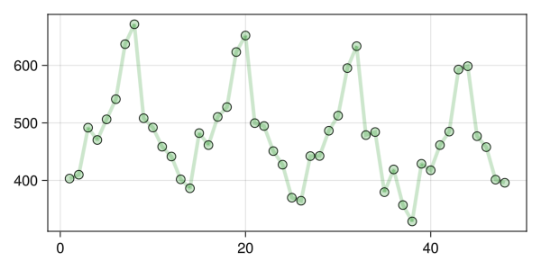
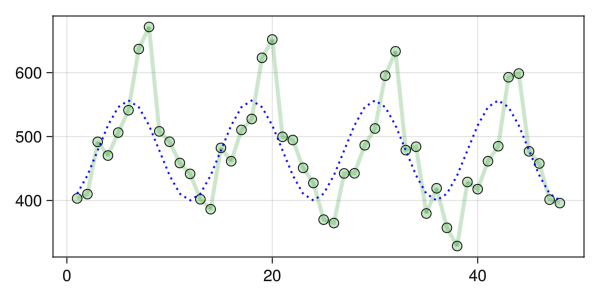
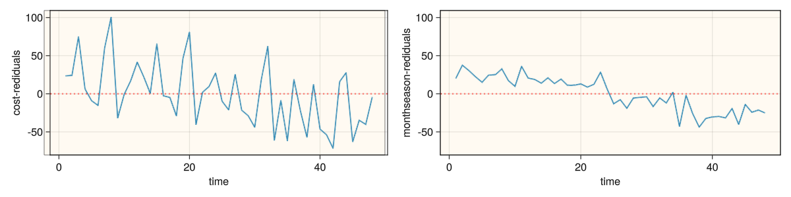

Code
include("utils.jl")
using RCall
using GLMakie,DataFrames,Pipe,PrettyTables,DataFramesMeta,FreqTables
using StatsBase,TableTransforms
using GLM,AnovaGLM,HypothesisTests
res=(600,300)(600, 300)math4mads
September 7, 2023
PeaceBridge2012 seasonal time series
PeaceBridge2012 记录了PeaceBridge 大桥的通行车辆记录
┌───────┬───────┬─────────┬───────┐
│ Year │ Month │ Traffic │ t │
│ Int32 │ Int32 │ Float64 │ Int32 │
├───────┼───────┼─────────┼───────┤
│ 2012 │ 1 │ 403.2 │ 1 │
│ 2012 │ 2 │ 409.9 │ 2 │
│ 2012 │ 3 │ 491.7 │ 3 │
│ 2012 │ 4 │ 470.3 │ 4 │
│ 2012 │ 5 │ 506.2 │ 5 │
└───────┴───────┴─────────┴───────┘
从 series 图中可以看到时间序列有明显的周期性变化,因此在拟合时需要 使用周期项
时间变量经过周期函数变换,\(S\) 由时间周期决定,如果是年就为\(12\) \[Y=\beta_0+ \beta_1cos(\frac{2\pi t}{S})+\beta_2sin(\frac{2\pi t}{S})+ε \tag{1}\]
定义两个函数作为线性组合的基函数(basis function), 回归模型对于基函数仍然是线性组合
\[ X_{cos}=cos(\frac{2\pi t}{S}) \tag{2.1}\] \[ X_{sin}=sin(\frac{2\pi t}{S}) \tag{2.2}\]
线性模型变形为:
\[Y=\beta_0+\beta_1X_{cos}+\beta_2X_{sin}+ε \tag{3}\]
StatsModels.TableRegressionModel{LinearModel{GLM.LmResp{Vector{Float64}}, GLM.DensePredChol{Float64, LinearAlgebra.CholeskyPivoted{Float64, Matrix{Float64}, Vector{Int64}}}}, Matrix{Float64}}
Traffic ~ 1 + :(cost(t)) + :(sint(t))
Coefficients:
────────────────────────────────────────────────────────────────────────
Coef. Std. Error t Pr(>|t|) Lower 95% Upper 95%
────────────────────────────────────────────────────────────────────────
(Intercept) 478.325 6.06123 78.92 <1e-49 466.117 490.533
cost(t) -78.2165 8.57187 -9.12 <1e-11 -95.4812 -60.9519
sint(t) -61.6879 8.57187 -7.20 <1e-08 -78.9525 -44.4232
────────────────────────────────────────────────────────────────────────F-test against the null model:
F-statistic: 67.53 on 48 observations and 2 degrees of freedom, p-value: <1e-13线性回归的t检验的0假设是所有回归项的系数都为0
在\(95\%\)置信区间下, \(model1\) 的\(pvalue\)远远小于\(0.05\) 所以 拒绝 0 假设, 接受备择假设:回归模型系数不全为 0
线性模型添加 \(cosine\) 变换的拟合

周期性拟合满足条件, 但是没有达到最高值, 需要更新模型
将每个月份处理为目录变量 ,可以表示如下:
\[Y=\beta_0+\beta_1Feb+\beta_2Mar+\cdots+\beta_{11}Dec+ε \tag{4}\]
StatsModels.TableRegressionModel{LinearModel{GLM.LmResp{Vector{Float64}}, GLM.DensePredChol{Float64, LinearAlgebra.CholeskyPivoted{Float64, Matrix{Float64}, Vector{Int64}}}}, Matrix{Float64}}
Traffic ~ 1 + Month
Coefficients:
────────────────────────────────────────────────────────────────────────
Coef. Std. Error t Pr(>|t|) Lower 95% Upper 95%
────────────────────────────────────────────────────────────────────────
(Intercept) 383.075 12.9524 29.58 <1e-26 356.806 409.344
Month: 2 -10.675 18.3174 -0.58 0.5637 -47.8245 26.4745
Month: 3 78.225 18.3174 4.27 0.0001 41.0755 115.374
Month: 4 64.9 18.3174 3.54 0.0011 27.7505 102.049
Month: 5 108.025 18.3174 5.90 <1e-06 70.8755 145.174
Month: 6 133.475 18.3174 7.29 <1e-07 96.3255 170.624
Month: 7 228.975 18.3174 12.50 <1e-13 191.826 266.124
Month: 8 255.775 18.3174 13.96 <1e-15 218.626 292.924
Month: 9 107.775 18.3174 5.88 <1e-06 70.6255 144.924
Month: 10 99.05 18.3174 5.41 <1e-05 61.9005 136.199
Month: 11 39.55 18.3174 2.16 0.0376 2.40052 76.6995
Month: 12 37.925 18.3174 2.07 0.0456 0.775517 75.0745
────────────────────────────────────────────────────────────────────────month1作为常数项,回归是以1月的数据作为基准, month2:-10.675 ,意思是在二月份比一月份 少-10.675*1000车辆通行,其他月份同样处理
绘制拟合曲线
cos 变换的模型与周期性变量模型模型拟合残差图
cost_resid=residuals(model1)
season_resid=residuals(model3)
xs4=data[:,:t]
function plot_pair_resid()
fig=Figure(resolution=(1200,300))
ax1=Axis(fig[1,1];xlabel="time",ylabel="cost-rediduals")
ax2=Axis(fig[1,2];xlabel="time",ylabel="monthseason-rediduals")
Box(fig[1,1];color = (:orange,0.05),strokewidth=0.5)
Box(fig[1,2];color = (:orange,0.05),strokewidth=0.5)
linkyaxes!(ax1, ax2)
lines!(ax1,xs4,cost_resid)
lines!(ax2,xs4,season_resid)
hlines!(ax1,[0],linestyle=:dot, linewidth=2,color=(:red, 0.8))
hlines!(ax2,[0],linestyle=:dot, linewidth=2,color=(:red, 0.8))
fig
end
plot_pair_resid()
可以看到周期性模型的残差非常小